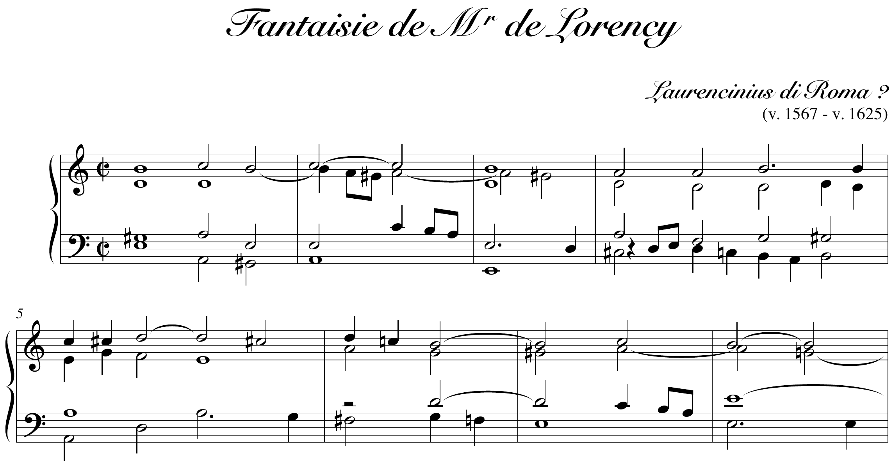
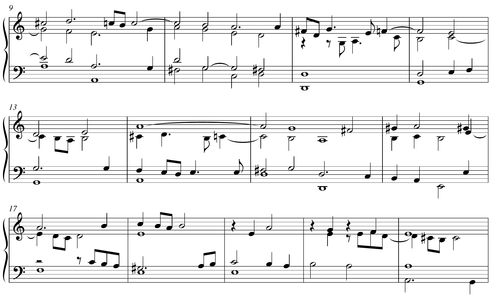
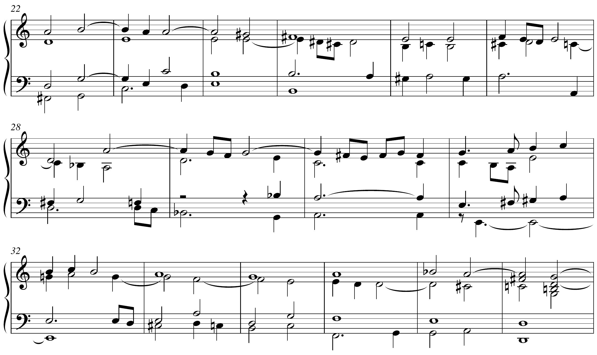
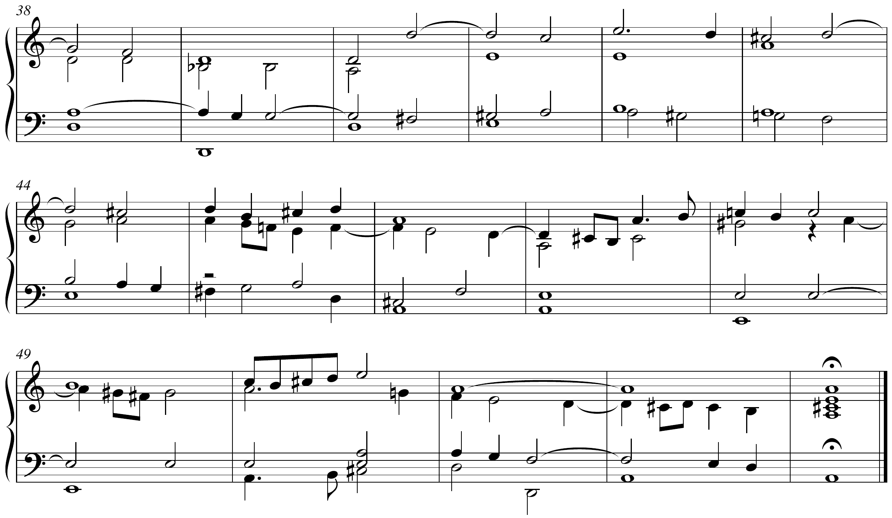

ZHdK · HS 2026
7. Sitzung // 26.10.2026 // Niels Pfeffer




Fantaisie de Mr de Lorency, Manuscrit Bauyn, um 1660, F-Pn Rés. Vm7 675, f. 34–34v. Ausgabe: Pierre Gouin, Les Éditions Outremontaises, Montréal 2003 (IMSLP, CC BY-SA 4.0). Aufnahme: Jean Rondeau, Melancholy Grace, Erato 2021.